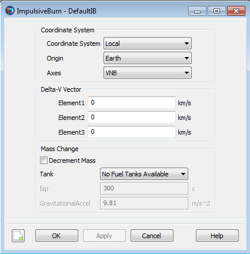

ImpulsiveBurn — An impulsive maneuver
The ImpulsiveBurn resource allows the spacecraft to undergo an instantaneous Delta-V (ΔV), as opposed to a finite burn which is not instantaneous, by specifying the three vector components of the Delta-V. You can configure the burn by defining its coordinate system and vector component values. For Local coordinate systems, the user can choose the Origin and type of Axes. Depending on the mission, it may be simpler to use one coordinate system over another.
See Also Maneuver,ChemicalTank,BeginFiniteBurn
| Field | Description | ||||||||||||
|---|---|---|---|---|---|---|---|---|---|---|---|---|---|
| Axes | Allows you to define a spacecraft centered set of axes for the impulsive burn. This field cannot be modified in the Mission Sequence.
| ||||||||||||
| B | Deprecated. Z-component of the applied impulsive burn (Delta-V)
| ||||||||||||
| CoordinateSystem | Determines what coordinate system the orientation parameters, Element1, Element2, and Element3 refer to. This field cannot be modified in the Mission Sequence.
| ||||||||||||
| DecrementMass | Flag which determines if the FuelMass is to be decremented as it used. This field cannot be modified in the Mission Sequence.
| ||||||||||||
| Element1 | X-component of the applied impulsive burn (Delta-V)
| ||||||||||||
| Element2 | Y-component of the applied impulsive burn (Delta-V)
| ||||||||||||
| Element3 | Z-component of the applied impulsive burn (Delta-V)
| ||||||||||||
| GravitationalAccel | Value of the gravitational acceleration used to calculate fuel depletion.
| ||||||||||||
| Isp | Value of the specific impulse of the fuel
| ||||||||||||
| N | Deprecated. Y-component of the applied impulsive burn (Delta-V)
| ||||||||||||
| Origin | The Origin field, used in conjunction with the Axes field, allows the user to define a spacecraft centered set of axes for the impulsive burn. This field cannot be modified in the Mission Sequence.
| ||||||||||||
| Tank | ChemicalTank from which the ChemicalThruster draws propellant from. This field cannot be modified in the Mission Sequence.
| ||||||||||||
| V | Deprecated. X-component of the applied impulsive burn (Delta-V)
| ||||||||||||
| VectorFormat | Deprecated. Allows you to define the format of the
ImpulsiveBurn Delta-V Vector. This field has
no affect. The ImpulsiveBurn Delta-V Vector
is always given in
|
The ImpulsiveBurn dialog box allows you to specify properties of an ImpulsiveBurn including Delta-V component values and choice of . If you choose to model fuel loss associated with an impulsive burn, you must specify choice of fuel tank as well as ISP value and gravitational acceleration used to calculate fuel use. The layout of the ImpulsiveBurn dialog box is shown below.
|  |
The and fields are only relevant if is set to Local. See the Remarks for more detail on local coordinate systems.
If is checked, then you can select the desired ChemicalTank used as the fuel supply for mass depletion.
Here, a Local Coordinate System is defined as one that we configure "locally" using the ImpulsiveBurn resource interface as opposed to defining a coordinate system using the Coordinate Systems folder in the Resources Tree.
To configure a Local Coordinate System, you must specify the coordinate system of the input Delta-V vector, Element1-3. If you choose a local Coordinate System, the four choices available, as given by the Axes sub-field, are VNB, LVLH, MJ2000Eq, and SpacecraftBody. VNB or Velocity-Normal-Binormal is a non-inertial coordinate system based upon the motion of the spacecraft with respect to the Origin sub-field. For example, if the Origin is chosen as Earth, then the X-axis of this coordinate system is the along the velocity of the spacecraft with respect to the Earth, the Y-axis is along the instantaneous orbit normal (with respect to the Earth) of the spacecraft, and the Z-axis points away from the Earth as much as possible while remaining orthogonal to the other two axes, completing the right-handed set.
Similarly, Local Vertical Local Horizontal or LVLH is a non-inertial coordinate system based upon the motion of the spacecraft with respect to the body specified in the Origin sub-field. If you choose Earth as the origin, then the X-axis of this coordinate system points from the center of the Earth to the spacecraft, the Z-axis is along the instantaneous orbit normal (with respect to the Earth) of the spacecraft, and the Y-axis completes the right-handed set. For typical bound orbits, the Y-axis is approximately aligned with the velocity vector. In the event of a perfectly circular orbit, the Y axis is exactly along the velocity vector.
MJ2000Eq is the J2000-based Earth-centered Earth mean equator inertial Coordinate System. Note that the Origin sub-field is not needed to define this coordinate system.
SpacecraftBody is the coordinate system used by the spacecraft. Since the thrust is applied in this system, GMAT uses the attitude of the spacecraft, a spacecraft attribute, to determine the inertial thrust direction. Note that the Origin sub-field is not needed to define this coordinate system.
Note that the standard method, as shown below, for specifying the components of an ImpulsiveBurn is to use the Element1, Element2, and Element3 field names.
Create ImpulsiveBurn DefaultIB
DefaultIB.Element1 = -3
DefaultIB.Element2 = 7
DefaultIB.Element3 = -2 For this current version of GMAT, you may also use the field names V, N, and B in place of Element1, Element2, and Element3, respectively. The commands below are equivalent to the commands above.
Create ImpulsiveBurn DefaultIB
DefaultIB.V = -3
DefaultIB.N = 7
DefaultIB.B = -2It is important to note that the V, N, B field names do not necessarily correspond to some Velocity, Normal, Binormal coordinate system. The coordinate system of any ImpulsiveBurn is always specified by the CoordinateSystem, Origin, and Axes fields. Because of the confusion that the V, N, B field names can cause, their use will not be allowed in future versions of GMAT. If you use the V, N, B field names in this version of GMAT, you will receive a warning to this affect.
Examples of axes defined using the spacecraft velocity are the VNB and LVLH axes discussed above as well as some user-defined axes. The behavior when applying an impulsive maneuver using these types of axes during a backwards-propagation is subtle and requires some explanation. In the examples that follow, we will focus our discussion on a VNB maneuver.
As will be shown in the script samples below, an impulsive maneuver is applied during a backwards propagation using the ‘BackProp’ keyword. The maneuver components that you specify for a backwards propagation are used to calculate the components of the maneuver actually applied. Refer to the script sample below where a backwards-propagated impulsive maneuver is followed by the same maneuver using a normal formal propagation. The impulsive maneuver is defined so that the velocity of the spacecraft is unchanged after the script is run.
Create Spacecraft Sat; Create ImpulsiveBurn myImpulsiveBurn; GMAT myImpulsiveBurn.CoordinateSystem = Local; GMAT myImpulsiveBurn.Origin = Earth; GMAT myImpulsiveBurn.Axes = VNB; myImpulsiveBurn.Element1 = 3.1 myImpulsiveBurn.Element2 = -0.1 myImpulsiveBurn.Element3 = 0.2 BeginMissionSequence Maneuver BackProp myImpulsiveBurn(Sat); Maneuver myImpulsiveBurn(Sat);
To calculate the actual maneuver components applied, GMAT, internally, uses an iterative calculation method. This iteration method works best for maneuver magnitudes that are not an appreciable fraction of the overall spacecraft velocity. In addition, for VNB maneuvers, the iteration method works best for maneuvers where the ‘N’ and ‘B’ component magnitudes are relatively small as compared to the 'V' component magnitude. If the GMAT internal iterative method fails to converge, a warning message will be generated. Currently, there is not an easy way for the user to report out the actual applied back-propagated maneuver components. (The maneuver report outputs the user supplied VNB coordinates). After the back-propagated maneuver has been applied, however, we do know what the components of the maneuver are. If the VNB maneuver has user-supplied components, (Vx, Vy, Vz), then after the back-propagated maneuver has been applied, the VNB components of the maneuver are (-Vx, -Vy, -Vz).
Consider the script sample below where the ‘N’ and ‘B’ components of the maneuver are zero and the ‘V’ component is +5 km/s. If the spacecraft velocity is (7,0,0) km/s in J2000 inertial coordinates, then after the backwards-propagated impulsive maneuver, the velocity of the spacecraft will be (2,0,0) km/s.
Create Spacecraft Sat;
Create ImpulsiveBurn myImpulsiveBurn;
GMAT myImpulsiveBurn.CoordinateSystem = Local;
GMAT myImpulsiveBurn.Origin = Earth;
GMAT myImpulsiveBurn.Axes = VNB;
myImpulsiveBurn.Element1 = 5
myImpulsiveBurn.Element2 = 0.0
myImpulsiveBurn.Element3 = 0.0
BeginMissionSequence
Maneuver BackProp myImpulsiveBurn(Sat);Finally, we note that when mass change is modeled for a backwards-propagated impulsive maneuver, mass is added to the tank. This is done so there is no change in mass when a backwards-propagated impulsive maneuver is followed by the same maneuver using a normal forward propagation.
| Resource | Description |
|---|---|
| Spacecraft resource | Must be created in order to apply any ImpulsiveBurn |
| ChemicalTank resource | If you want to model mass depletion for an ImpulsiveBurn, attach a ChemicalTank to the maneuvered Spacecraft as a source of fuel mass. |
| Maneuver command | Must use the Maneuver command to apply an ImpulsiveBurn to a Spacecraft. |
| Vary command | If you want to allow the ImpulsiveBurn components to vary in order to achieve some goal, then the Vary command, as part of a Target or Optimize command sequence, must be used. |
Create a default ChemicalTank and an ImpulsiveBurn that allows for fuel depletion, assign the ImpulsiveBurn the default ChemicalTank, attach the ChemicalTank to a Spacecraft, and apply the ImpulsiveBurn to the Spacecraft.
% Create the ChemicalTank Resource
Create ChemicalTank FuelTank1
FuelTank1.AllowNegativeFuelMass = false
FuelTank1.FuelMass = 756
FuelTank1.Pressure = 1500
FuelTank1.Temperature = 20
FuelTank1.RefTemperature = 20
FuelTank1.Volume = 0.75
FuelTank1.FuelDensity = 1260
FuelTank1.PressureModel = PressureRegulated
Create ImpulsiveBurn DefaultIB
DefaultIB.CoordinateSystem = Local
DefaultIB.Origin = Earth
DefaultIB.Axes = VNB
DefaultIB.Element1 = 0.001
DefaultIB.Element2 = 0
DefaultIB.Element3 = 0
DefaultIB.DecrementMass = true
DefaultIB.Tank = {FuelTank1}
DefaultIB.Isp = 300
DefaultIB.GravitationalAccel = 9.810000000000001
% Add the the ChemicalTank to a Spacecraft
Create Spacecraft DefaultSC
DefaultSC.Tanks = {FuelTank1}
BeginMissionSequence
Maneuver DefaultIB(DefaultSC)